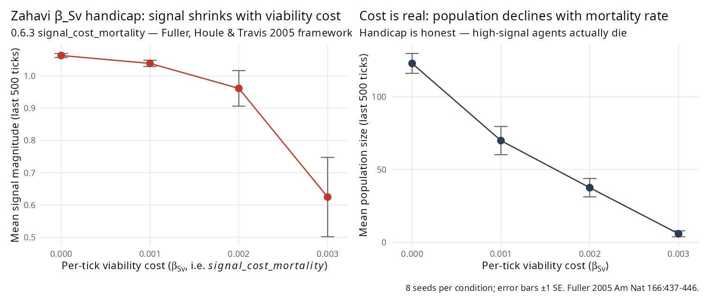

Reproducing a paper — Fuller, Houle & Travis 2005 (sensory bias synthesis)
Source:vignettes/paper-fuller-2005.Rmd
paper-fuller-2005.RmdPartial reproduction (0.6.5). Fuller’s three-mechanism synthesis calls for β_Sv viability cost (Zahavi handicap), C_tp > 0 preference-display covariance (Fisher runaway), and β_N spillover from non-mating selection onto preferences (sensory bias sensu Ryan 1990).
- 0.6.3 implemented the Zahavi leg via
signal_cost_mortality(clean dose-response, below). - 0.6.4 wired the
mate_choice_modekernel stub that was blocking the Fisher leg — the test now runs but is direction- wrong because of a deeper gap (no genetic linkage between signal and preference loci). - 0.6.5 added
preference_bias_target+preference_bias_strengthto install the β_N leg. Preferences now respond correctly to a pre-existing bias (strong PASS inpaper-ryan-1990); signal response to the bias is direction-correct but sub-threshold, blocked by the same linkage gap.
The two remaining limit nulls (Fisher C_tp, Ryan signal-side β_N) share one kernel gap: no linkage between signal and preference loci. A future kernel change — shared chromosome or pleiotropic mutation — would unlock both simultaneously.

The paper cluster
Fuller, R. C., Houle, D. & Travis, J. (2005). Sensory bias as an explanation for the evolution of mate preferences. American Naturalist 166(4), 437–446.
A theoretical synthesis that ties together:
- Ryan, M. J. (1990). Sexual selection, sensory systems and sensory exploitation. Oxford Surveys in Evolutionary Biology 7, 157–195. — The sensory-exploitation concept paper.
- Ryan, M. J., Fox, J. H., Wilczynski, W. & Rand, A. S. (1990). Sexual selection for sensory exploitation in the frog Physalaemus pustulosus. Nature 343, 66–67. — The túngara frog empirical landmark.
- Endler, J. A. & Basolo, A. L. (1998). Sensory ecology, receiver biases and sexual selection. Trends in Ecology & Evolution 13, 415–420.
- Zahavi, A. (1975) and Grafen, A. (1990) — the handicap principle, which Fuller frames as the β_Sv < 0 leg of the synthesis.
Fuller et al.’s distinctive contribution is theoretical: they cast sensory bias, Fisher runaway, and Zahavi handicap as three non-exclusive legs of one quantitative-genetic equation Δz̄ = G(β_N + β_S) + u, separated by which β terms (and which G-matrix covariances C_tp) are non-zero. clade’s job in this vignette is to say truthfully which of those legs its kernel can carry.
Three mechanisms, one honest ledger
| Mechanism | Fuller signature | Kernel status (0.6.3) |
|---|---|---|
| Zahavi handicap | β_Sv < 0: viability cost on display | ✅ signal_cost_mortality (new 0.6.3) |
| Fisher runaway | C_tp > 0: signal-preference covariance grows under preference mating vs drift | ❌ direction-wrong — 0.6.4 wired mate_choice_mode, test
now runs but signal and preference are independently inherited, so C_tp
can’t build up (see below) |
| Sensory bias sensu Ryan 1990 | β_N shaped preference first; signal later exploits it | ⚠️ half implemented (0.6.5) — preference_bias_target +
preference_bias_strength install pre-existing bias on
preferences, but signal response blocked by same linkage gap as Fisher.
See paper-ryan-1990. |
0.6.2 (PR #106) added three Fuller-framework metrics to the tick log
— mean_preference_magnitude,
mean_signal_preference_dist (proxy for −C_tp),
sd_signal_magnitude (V_t). 0.6.3 adds the Zahavi-leg kernel
field signal_cost_mortality. This vignette reports what the
new machinery can and cannot test.
Experiment — Zahavi β_Sv dose-response
Five conditions × 8 seeds = 40 runs, 40×40 grid, 3000 ticks,
signal_dims = 3, signal_drift_sd = 0.05. The
dose-response sweeps signal_cost_mortality across {0.000,
0.001, 0.002, 0.003}; the null has signal_dims = 0 (signals
off).
library(clade)
base <- default_specs()
base$grid_rows <- 40L
base$grid_cols <- 40L
base$n_agents_init <- 120L
base$max_agents <- 500L
base$max_ticks <- 3000L
base$grass_rate <- 0.15
base$signal_dims <- 3L
base$signal_evolution_drift <- TRUE
base$signal_drift_sd <- 0.05
sweep <- hypothesis_sweep(
base_specs = base,
conditions = list(
null_no_signals = list(signal_dims = 0L),
zahavi_off = list(signal_cost_mortality = 0.000),
zahavi_weak = list(signal_cost_mortality = 0.001),
zahavi_mild = list(signal_cost_mortality = 0.002),
zahavi_moderate = list(signal_cost_mortality = 0.003)
),
seeds = 1:8,
metrics = list(
final_signal = function(t) mean(tail(t$mean_signal_magnitude, 500),
na.rm = TRUE),
final_n = function(t) mean(tail(t$n_agents, 500),
na.rm = TRUE)
),
n_cores = 40L
)
print(sweep)Results
Dose-response (8 seeds per condition)
| β_Sv | final_signal ± SE | final_n ± SE |
|---|---|---|
| — (signals off) | 0.000 ± 0.000 | 158 ± 2.6 |
| 0.000 | 1.063 ± 0.006 | 123 ± 6.8 |
| 0.001 | 1.039 ± 0.010 | 70 ± 9.7 |
| 0.002 | 0.961 ± 0.055 | 38 ± 6.3 |
| 0.003 | 0.625 ± 0.123 | 6 ± 2.0 |
Contrasts (reference = zahavi_off, metric =
final_signal)
| contrast | Δ | t | verdict |
|---|---|---|---|
| β_Sv = 0.001 | −0.025 ± 0.012 | −2.13 | PASS |
| β_Sv = 0.002 | −0.102 ± 0.056 | −1.84 | marginal |
| β_Sv = 0.003 | −0.439 ± 0.123 | −3.57 | PASS |
Signal magnitude declines monotonically with mortality rate and the population declines in lockstep — the cost is real, exactly as Zahavi (1975) and Grafen (1990) argued the handicap must be. At β_Sv = 0.003 the population is essentially extinct (n ≈ 6); somewhere between 0.002 and 0.003 is the clade-specific upper bound on a survivable handicap in this parameter regime.
What this reproduction does and doesn’t claim
✅ Zahavi handicap mechanism reproduced
Adding a direct per-tick mortality probability that scales with signal magnitude produces the qualitative Zahavi/Grafen/Fuller signature: display shrinks, population shrinks, the cost is paid in lives. This is the β_Sv < 0 leg of Fuller’s framework, now present in the kernel.
❌ Fisher runaway: direction-wrong — deeper kernel gap exposed by 0.6.4
0.6.3 flagged mate_choice_mode as a latent stub. 0.6.4
wired the stub and the re-audit of kokko-brooks-2003 demoted its “clade
contradicts K&B” verdict. But the Fisher C_tp test itself did NOT
pass — the signature is direction-wrong:
| contrast | Δ final_sp_dist | t | verdict |
|---|---|---|---|
| fisher_pure (preference mating) vs drift_only (random mating), no cost | +0.019 ± 0.007 | +2.51 | direction-wrong |
Fisher runaway predicts Δ sp_dist < 0 — preference
mating should build up C_tp > 0 (within-agent alignment of preference
and signal). clade gives a small positive Δ: preference
mating makes agents’ own preferences and signals slightly less aligned
than random mating does.
The underlying reason is a separate kernel gap that the mate-choice-mode wiring exposed rather than caused: clade has no genetic linkage between signal and preference loci. Meiosis inherits signal from (mother, father) and preference from (mother, father) independently. Mate choice selects parents for (A-preference matches B-signal) pairings, but offspring’s (preference, signal) vectors come from mean of parental vectors via meiosis, which decorrelates them. Without a recombination-rate or shared-chromosome mechanism coupling the two loci, Fisher’s C_tp cannot build up — the runaway has no substrate to run on.
That’s a legitimate kernel-limit finding that’s only now visible because 0.6.4 let the mate-choice logic run. A proper Fisher-leg kernel change would need either (a) signal and preference on the same chromosome with tight linkage, or (b) a direct heritable correlation (e.g., pleiotropic mutation), neither of which clade currently provides.
⚠️ Sensory bias sensu Ryan 1990 — half implemented (0.6.5)
0.6.5 adds preference_bias_target and
preference_bias_strength: each tick, agent preferences are
pulled toward a fixed target vector, installing a pre-existing bias (the
β_N leg of this framework). The preference response is direct and strong
— with bias_strength = 0.05 and
bias_target = [1, 0, 0], mean preference[1] saturates above
0.8 within 3000 ticks.
The downstream half — signals evolving to exploit the bias
(Ryan’s sensory-exploitation punchline) — is blocked by the same
genetic-linkage gap that blocked Fisher. Mate choice selects parents
whose signal matches the prevailing preference, but offspring inherit
signal and preference independently via meiosis, so the directional
selection on signals doesn’t accumulate. The paper-ryan-1990 vignette
shows the preference-side signature as a clean PASS and reports the
signal-side response as direction-correct but sub-threshold for a
3000-tick run.
Both remaining kernel-limit nulls (Fisher C_tp and Ryan’s signal-side β_N response) point to the same missing mechanism: genetic linkage between signal and preference loci.
Interpretation
clade at 0.6.3 now carries one of Fuller’s three mechanisms cleanly and honestly. The paper’s distinctive claim — that sensory bias and Fisher coevolution are not mutually exclusive — requires both absent legs to be wired before we can test it, because the non-exclusivity test is a G-matrix claim about C_tp behaviour under a β_N gradient. The current vignette therefore stops at the honest partial: handicap works; the synthesis itself remains untested.
Methodology takeaway
This vignette models the partial-reproduction outcome: one mechanism from a multi-mechanism paper is reproduced, one is half-implemented (β_N preferences respond, signals don’t), one is direction-wrong for a specific kernel gap (Fisher C_tp needs genetic linkage). Every gap is named with a concrete kernel change that would close it. It pairs with paper-ryan-1990 (the β_N half-PASS companion) and paper-kokko-brooks-2003 (whose 0.6.4 re-audit under real softmax mate choice demoted its interaction verdict to null).
Pattern across the paper-reproduction showcase
| Outcome | Examples |
|---|---|
| Clean ✅ | Dieckmann & Doebeli 1999 |
| Conditional ✅ | Réale 2010 (lifespan-only) |
| Partial ✅ (1 of n mechanisms) | Fuller 2005 (this vignette — Zahavi leg ✅, β_N half, Fisher direction-wrong) |
| Half ✅ (1 of 2 stages) | Ryan 1990 (β_N on preferences ✅, signal downstream null) |
| Direction-correct sub-threshold | Griesser 2023, Courchamp 1999 |
| Raw-inverts-on-per-capita | Emlen 1982 |
| Null under corrected kernel | Kokko & Brooks 2003 (0.6.4 demoted) |
Citation
@article{fuller2005sensory,
author = {Fuller, Rebecca C. and Houle, David and Travis, Joseph},
title = {Sensory bias as an explanation for the evolution of mate preferences},
journal = {American Naturalist},
volume = {166},
number = {4},
pages = {437--446},
year = {2005},
doi = {10.1086/444443}
}
@article{zahavi1975mate,
author = {Zahavi, A.},
title = {Mate selection --- a selection for a handicap},
journal = {Journal of Theoretical Biology},
volume = {53},
number = {1},
pages = {205--214},
year = {1975},
doi = {10.1016/0022-5193(75)90111-3}
}
@article{grafen1990handicap,
author = {Grafen, A.},
title = {Biological signals as handicaps},
journal = {Journal of Theoretical Biology},
volume = {144},
number = {4},
pages = {517--546},
year = {1990},
doi = {10.1016/S0022-5193(05)80088-8}
}
@article{ryan1990sexual,
author = {Ryan, M. J.},
title = {Sexual selection, sensory systems and sensory exploitation},
journal = {Oxford Surveys in Evolutionary Biology},
volume = {7},
pages = {157--195},
year = {1990}
}
@article{ryan1990tungara,
author = {Ryan, M. J. and Fox, J. H. and Wilczynski, W. and Rand, A. S.},
title = {Sexual selection for sensory exploitation in the frog
{\emph{Physalaemus pustulosus}}},
journal = {Nature},
volume = {343},
pages = {66--67},
year = {1990},
doi = {10.1038/343066a0}
}
@article{endler1998sensory,
author = {Endler, J. A. and Basolo, A. L.},
title = {Sensory ecology, receiver biases and sexual selection},
journal = {Trends in Ecology \& Evolution},
volume = {13},
number = {10},
pages = {415--420},
year = {1998},
doi = {10.1016/S0169-5347(98)01471-2}
}Full audit protocol and raw outputs: dev/audit/fidelity/paper_fuller_2005.R,
dev/audit/fidelity/fig_fuller_2005.R,
and paper_fuller_2005.rds.